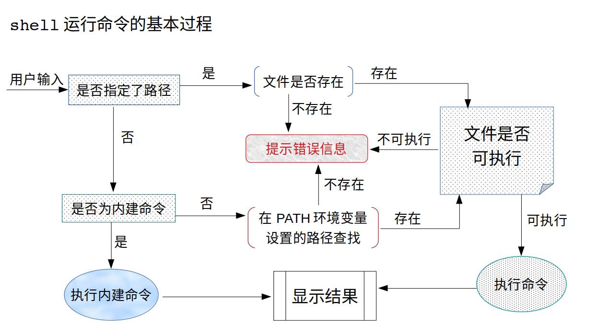
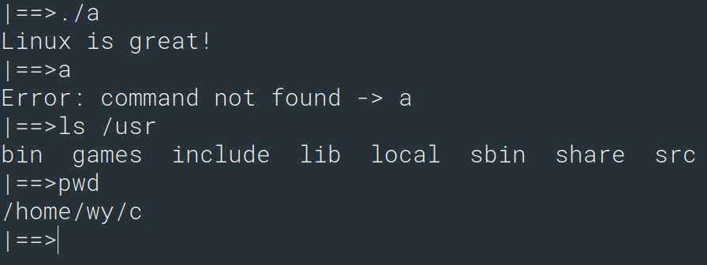

探索Linux：实现最小shell
本章内容通过使用C语言调用Linux系统接口实现一个最小shell来深入理解bash的工作方式。

要实现最小shell，需要以下一些操作：
- 如何创建子进程
- 如何在一个进程中运行其他程序
- 分割字符串解析出命令名称和参数
fork用于创建子进程，这是之前就已经接触过的。接下来看看另外的两个操作如何实现。
字符串分割
C语言中提供了标准库函数strtok用于切割字符串。比如，"axdrtyucrtkp"使用"rt"分割之后变成"axd","yuc","kp"。
对于高级语言这很容易实现，比如，在Python环境中，字符串 'abcdeabcdef' 可以直接使用：'abcdefgabcdefghi'.split('cd')
分割成['ab', 'eab', 'ef']
在PHP语言中，使用:explode(':','/usr/bin:/usr/sbin:/bin:/sbin');
可以把字符串分割成数组['/usr/bin','/usr/sbin','/bin','/sbin']
在C语言中没有这样高级的操作，库函数strtok提供了类似的操作。但是strtok函数不是把字符串分割为数组。而是按照分割子串，把源字符串对应的部分设置为'\0'，每次返回下一个字符串首地址，直到源字符串末尾或是没有分割字串。通过man 3 strtok查看库函数手册：
STRTOK(3) Linux Programmer's Manual STRTOK(3)
NAME
strtok, strtok_r - extract tokens from strings
SYNOPSIS
#include <string.h>
char *strtok(char *str, const char *delim);
char *strtok_r(char *str, const char *delim, char **saveptr);
......
......
DESCRIPTION
The strtok() function breaks a string into a sequence of zero or more nonempty tokens. On the first call to strtok(), the string to be parsed should be specified in str. In each subsequent call that should parse the same string, str must be NULL.
The delim argument specifies a set of bytes that delimit the tokens in the parsed string. The caller may specify different strings in delim in successive calls that parse the same string.
Each call to strtok() returns a pointer to a null-terminated string containing the next token. This string does not include the delimiting byte. If no more tokens are found,strtok() returns NULL.
......
......
RETURN VALUE
The strtok() and strtok_r() functions return a pointer to the next token, or NULL if there are no more tokens.
从这个函数的说明手册发现，strtok和其他调用有些不同。比如，要使用","分割字符串 "Linux,Unix,Windows"，初次调用是这样的形式：
char src[1024] = "Linux,Unix,Windows";
char * sub = NULL;
sub = strtok(src, ",");但是再次调用，由于还是对src进行分割，就是这样的形式：
sub = strtok(NULL, ",");如果strtok返回NULL则分割结束。到这里，你可能会有疑惑，我们先来看一个完整的示例：
#include <string.h>
#include <stdlib.h>
#include <stdio.h>
int main(int argc, char *agrv[]) {
char src[1024] = "Linux,Unix,Windowx,FreeBSD";
char * dem = ",";
char * sub = NULL;
sub = strtok(src, dem);
while (sub!=NULL) {
printf("%s\n", sub);
sub = strtok(NULL, dem);
}
return 0;
}这个程序会输出：
Linux
Unix
Windows
FreeBSD现在我们来探索更多的细节，首先要知道的是，strtok会改变源字符串的值，如果在一开始使用strlen计算src的长度并保存，在strtok调用之后，根据src最开始的长度循环输出每个字符的数值，会发现','已经变成了'\0'，strtok是在src上操作，每次调用返回对应的指针位置。strtok调用完之后，src会变成这样："Linux\0Unix\0Windows\0FreeBSD"。
另一个需要注意的问题是，分割字符串是一个字符集，比如使用";,"分割字符串 "Linux;Unix,Windows"，那么';'和','都会分割成'\0'，";,"也会分割成"\0\0"。这点和其他高级语言的使用方式不同。
在程序中运行其他程序：exec系列函数
execv，execvp等函数可以用来执行外部程序。通过man 3 execv查看手册：
EXEC(3) Linux Programmer's Manual EXEC(3)
NAME
execl, execlp, execle, execv, execvp, execvpe - execute a file
SYNOPSIS
#include <unistd.h>
extern char **environ;
int execl(const char *path, const char *arg, ...
/* (char *) NULL */);
int execlp(const char *file, const char *arg, ...
/* (char *) NULL */);
int execle(const char *path, const char *arg, ...
/*, (char *) NULL, char * const envp[] */);
int execv(const char *path, char *const argv[]);
int execvp(const char *file, char *const argv[]);
int execvpe(const char *file, char *const argv[],
char *const envp[]);
DESCRIPTION
The exec() family of functions replaces the current process image with a new process image. The functions described in this manual page are front-ends for execve(2). (See the manual page for execve(2) for further details about the replacement of the current process image.)
····
The const char *arg and subsequent ellipses in the execl(),execlp(), and execle() functions can be thought of as arg0, arg1, ...,argn.Together they describe a list of one or more pointers to null-terminated strings that represent the argument list available to the executed program. The first argument, by convention, should point to the filename associated with the file being executed. The list of arguments must be terminated by a null pointer, and,since these are variadic functions, this pointer must be cast (char *) NULL.
......
......
RETURN VALUE
The exec() functions return only if an error has occurred. The
return value is -1, and errno is set to indicate the error.
......注意手册描述，传递的参数，execl,execlp等传递可变参数的形式，最终要以一个NULL指针结束。而execv这种第二个参数是指针数组的形式最终要以一个NULL结尾表示没有更多参数。以execv为例：
| 原型 | int execv(const char *path, char *const argv[]); |
|---|---|
| path | 要运行的命令字符串，要传递绝对路径 |
| argv | 运行命令传递的参数，注意argv[0]是程序的名字 |
| 返回值 | 只有当程序出错的时候返回-1 |
execv等函数会使用新的进程镜像替换当前的进程镜像，进程ID不变，但是当前进程注册的信号处理机制会失效。
execv函数示例
#include <stdio.h>
#include <stdlib.h>
#include <unistd.h>
int main(int argc, char * argv[])
{
char * cmd_path = "/bin/uname";
char * cmd_argv[] = {"/bin/uname", "-a", NULL};
if (execv(cmd_path, cmd_argv)<0) {
perror("execv");
return 1;
}
return 0;
}
最小shell
现在，让我们来设计一个最小shell，并由此更深刻理解shell的工作方式。使用一个全局变量_path保存默认的路径，并且使用全局变量_home_bin存储$HOME/bin目录信息，并检测如果存在的话才会作为默认的命令搜索路径。
执行命令的基本过程：
- 获取用户的输入
- 使用strtok按空格分割字符串，第一个字符串作为命令名称，其他的作为参数
- 从默认的路径中按照输入的名称搜索文件
- 找到的话，fork子进程，在子进程中把绝对路径以及其他参数传递给execv函数执行命令，父进程等待子进程退出。
- 否则提示命令未找到。
先来看最终执行效果：

#include <stdio.h>
#include <stdlib.h>
#include <unistd.h>
#include <sys/types.h>
#include <sys/wait.h>
#include <fcntl.h>
#include <sys/stat.h>
#include <string.h>
#include <dirent.h>
char *_path[] = {
NULL,
"/bin",
"/sbin",
"/usr/bin",
"/usr/sbin",
"/usr/local/bin",
"/usr/local/sbin"
};
char _home_bin[256] = {'\0'};
#define ARGS_END 1024
#define MAX_NAME_LEN 2048
int _args_ind;
char * _args_p[ARGS_END] = {NULL,};
char _cmd_path[MAX_NAME_LEN];
int find_command(char * dir_list[], int n, char* name);
int main(int argc, char * argv[])
{
_args_ind = 0;
char * path = getenv("HOME");
//这里并没有对长度做检测，实际上Linux会对用户名有最大长度限制
if (path) {
strcpy(_home_bin, path);
strcat(_home_bin, "/bin");
}
struct stat st;
if (access(_home_bin,F_OK|R_OK|X_OK)==0
&& lstat(_home_bin, &st)==0
&& S_ISDIR(st.st_mode)
) {
_path[0] = _home_bin;
}
int pid = 0;
char cmd_buf[8192] = {'\0'};
int count = 0;
char **cmd_argv = NULL;
int i;
while (1) {
write(1, "|==>", 4); //提示符信息
count = read(0,cmd_buf,8191); 读取用户输入
if (count<0) {
perror("read");
continue;
} else {
/*
初始化一些信息，并开始解析参数，获取到的用户输入是一个字符串，
要把字符串根据空格分割成数组（C语言中就是多个子串），然后把
第一个作为命令名称，其他的作为参数
*/
cmd_buf[count-1] = '\0';
_args_ind = 0;
_args_p[_args_ind] = strtok(cmd_buf, " ");
if (_args_p[_args_ind]!=NULL) {
while (_args_ind < ARGS_END) {
_args_ind++;
//记录每个字串的位置
_args_p[_args_ind] = strtok(NULL, " ");
if (_args_p[_args_ind]==NULL)break;
}
} else {
_args_ind = 0;
}
if (_args_p[0]==NULL || strlen(_args_p[0])==0)
continue;
}
cmd_argv = (char**)malloc(sizeof(char*)*(_args_ind+1));
if (cmd_argv == NULL) {
perror("malloc");
continue;
}
for(i=0;i<_args_ind;i++)
cmd_argv[i] = _args_p[i];
//execv要求第二个参数的格式：必须是NULL结尾
cmd_argv[_args_ind] = NULL;
int p_size = sizeof(_path);
int chp_size = sizeof(char*);
//查找命令
if (find_command(_path,p_size/chp_size,cmd_argv[0]))
{
printf("Error,command not found:%s\n",cmd_argv[0]);
continue;
}
pid = fork();
if (pid < 0) {
perror("fork");
continue;
}
if (pid > 0) {
int status = 0;
wait(&status);//父进程等待子进程退出
free(cmd_argv);
cmd_argv = NULL;
}
if (pid == 0) {
//子进程执行命令
if (execv(_cmd_path, cmd_argv)<0) {
perror("execv");
return -1;
}
}
}
return 0;
}
int find_command(char * dir_list[], int n, char * name) {
DIR * d = NULL;
struct dirent * rd;
for (int i=0; i<n; i++) {
if (dir_list[i]==NULL)continue;
d = opendir(dir_list[i]);
if (d==NULL) {
perror("opendir");
continue;
}
while((rd = readdir(d))!=NULL) {
if (strcmp(rd->d_name, "..")==0
|| strcmp(rd->d_name, ".")==0)
continue;
if (strcmp(rd->d_name, name)==0) {
strcpy(_cmd_path, dir_list[i]);
strcat(_cmd_path, "/");
strcat(_cmd_path, rd->d_name);
closedir(d);
return 0;
}
}
closedir(d);
}
return -1;
}这个程序需要强制退出，我们并没有提供exit命令控制程序退出，也没有提供cd，pwd等命令，这些命令都要实现为内建命令。而且没有检测命令是否指定了路径，并且现在实现的shell没有处理SIGINT信号。
加入内建命令以及信号处理
这里使用一个build_in函数执行内建命令，我们实现的shell在执行命令的时候先检测是不是内建命令，是的话执行，否则从默认路径搜索加载执行。
注册SIGINT信号的处理函数，在用户输入Ctrl+C的时候不会退出。
#include <stdio.h>
#include <stdlib.h>
#include <unistd.h>
#include <sys/types.h>
#include <sys/wait.h>
#include <fcntl.h>
#include <sys/stat.h>
#include <string.h>
#include <dirent.h>
char *_path[] = {
"\0",
"/bin",
"/sbin",
"/usr/bin",
"/usr/sbin",
"/usr/local/bin",
"/usr/local/sbin"
};
#define ARGS_END 1024
#define MAX_NAME_LEN 2048
#define BUILD_NOTFD -1
#define BUILD_OK 0
#define BUILD_ERR 1
int _args_ind;
char * _args_p[ARGS_END] = {NULL,};
char _cmd_path[MAX_NAME_LEN];
int find_command(char * dir_list[], int n, char* name);
int build_in(char * cmd, char * cmd_argv[]);
void handle_sig(int sig) {
printf("\n");
}
int main(int argc, char * argv[])
{
signal(SIGINT, handle_sig);
_args_ind = 0;
char * path = getenv("HOME");
char home_bin[256] = {'\0'};
strcpy(home_bin, path);
strcat(home_bin, "/bin");
struct stat st;
if (access(home_bin,F_OK|R_OK|X_OK)==0
&& lstat(home_bin, &st)==0
&& S_ISDIR(st.st_mode)
) {
_path[0] = home_bin;
} else {
home_bin[0] = '\0';
}
int pid = 0;
char cmd_buf[8192] = {'\0'};
int count = 0;
char **cmd_argv = NULL;
int i;
int len_tmp = 0;
while (1) {
write(1, "|==>", 4);
count = read(0,cmd_buf,8191);
if (count<0) {
perror("read");
continue;
} else {
cmd_buf[count-1] = '\0';
_args_ind = 0;
_args_p[_args_ind] = strtok(cmd_buf, " ");
if (_args_p[_args_ind]!=NULL) {
while (_args_ind < ARGS_END) {
_args_ind++;
_args_p[_args_ind] = strtok(NULL, " ");
if (_args_p[_args_ind]==NULL)break;
}
} else {
_args_ind = 0;
}
if (_args_p[0]==NULL || strlen(_args_p[0])==0)
continue;
}
cmd_argv = (char**)malloc(sizeof(char*)*(_args_ind+1));
if (cmd_argv == NULL) {
perror("malloc");
continue;
}
for(i=0;i<_args_ind;i++)
cmd_argv[i] = _args_p[i];
cmd_argv[_args_ind] = NULL;
if (build_in(cmd_argv[0], cmd_argv+1) != BUILD_NOTFD) {
continue;
}
//如果指定了路径，则不需要再去查找
if (strchr(cmd_argv[0], '/') != NULL) {
if (cmd_argv[0][0] == '/') {
strcpy(_cmd_path, cmd_argv[0]);
} else {
getcwd(_cmd_path, MAX_NAME_LEN - 2);
strcat(_cmd_path, "/");
len_tmp = strlen(_cmd_path);
strncat(_cmd_path, cmd_argv[0], MAX_NAME_LEN - len_tmp - 1);
}
}
else if (find_command(_path, sizeof(_path)/sizeof(char*), cmd_argv[0])) {
printf("Error: command not found -> %s\n", cmd_argv[0]);
continue;
}
pid = fork();
if (pid < 0) {
perror("fork");
continue;
}
if (pid > 0) {
int status = 0;
wait(&status);
free(cmd_argv);
cmd_argv = NULL;
}
if (pid == 0) {
if (execv(_cmd_path, cmd_argv)<0) {
perror("execv");
return -1;
}
}
}
return 0;
}
int find_command(char * dir_list[], int n, char * name) {
DIR * d = NULL;
struct dirent * rd;
for (int i=0; i<n; i++) {
d = opendir(dir_list[i]);
if (d==NULL) {
perror("opendir");
continue;
}
while((rd = readdir(d))!=NULL) {
if (strcmp(rd->d_name, "..")==0 || strcmp(rd->d_name, ".")==0)
continue;
if (strcmp(rd->d_name, name)==0) {
strcpy(_cmd_path, dir_list[i]);
strcat(_cmd_path, "/");
strcat(_cmd_path, rd->d_name);
closedir(d);
return 0;
}
}
closedir(d);
}
return -1;
}
int build_in(char * cmd, char * cmd_argv[]) {
if (strcmp(cmd, "cd")==0) {
if (cmd_argv[0]==NULL)
chdir(getenv("HOME"));
else {
if (chdir(cmd_argv[0])<0) {
perror("chdir");
return BUILD_ERR;
}
}
} else if (strcmp(cmd, "pwd")==0) {
char cwd[MAX_NAME_LEN] = {'\0'};
if (getcwd(cwd, MAX_NAME_LEN-1)==NULL) {
perror("getcwd");
return BUILD_ERR;
}
printf("%s\n",cwd);
} else if (strcmp(cmd, "help")==0) {
printf("There is no help\n");
} else if (strcmp(cmd, "exit")==0 || strcmp(cmd, "quit")==0) {
_exit(0);
} else {
return BUILD_NOTFD;
}
return BUILD_OK;
}